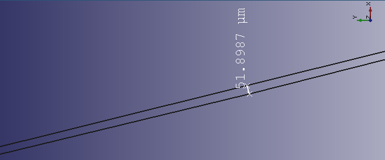

Forums » Discussion »
Accurately Modelling the Nozzle's Curves in CadQuery
Added by Jeremy Wright over 7 years ago
I started a feature request on CQ's GitHub issue tracker for this. A conversation we had in last week's #EngineerSpeak Hangout got me thinking, and I finally got some time to do an experiment this morning. It's a mongrel of FreeCAD and CQ code, but shows that it is possible to create a clean curve (based on a bunch of points) that's pretty close to what you get with a polyline. The curve in the screenshot is from the Dean aerospike CQ example I did a few months ago. The left-most point is the tip of the spike, and the right-most is where the curve stops at the outside of the top of the chamber (or at least what I think of as the chamber).
Replies (23)
RE: Accurately Modelling the Nozzle's Curves in CadQuery - Added by J. Simmons over 7 years ago
Wow, that is very impressive. I need to go dig out my math text books and find a measurable test for how good the fit is, but judging from the image it is clearly very close.
Here's the image Jeremy was talking about:

Note, as Jeremy points out, this is a rendering of both the polyline from the original points and the fitted curve. Like I said, impressive.
Oh, and Jeremy, this looks like you are looking at just the aerospike nozzle. The tip is at the left hand side of the image and the part of the throat defined by the nozzle is on the right. The throat would be fully defined by adding in the geometry for the chamber so that we can define the outer radius of the throat.
RE: Accurately Modelling the Nozzle's Curves in CadQuery - Added by Jeremy Wright over 7 years ago
I was pleased, and a little surprised, by the results. I thought I'd have to do a lot more coding to get that to work.
Here's a shot that's zoomed in a little bit. The line on the bottom includes 2 segments of the polyline, and the line on the top is the first segment of the curve.

The throat would be fully defined by adding in the geometry for the chamber so that we can define the outer radius of the throat.
Ok, that makes sense. I started with just the curve on the spike because it's a very recognizable part of the geometry, and it's also the part I thought would give us the most trouble in CadQuery. I hope to check with the FreeCAD devs on where the 26 point limitation comes from, and then to add the code to CQ for this operation soon-ish. Then I'll be able to redo the entire nozzle outline and revolve it. As we were talking about last night, if we can do this nozzle, we can do the cold gas thruster nozzle.